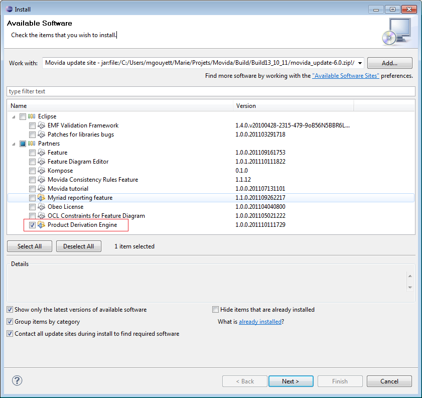

You need to install first the Feature Diagram Editor and all its dependencies. For more informations about that please refer to the Feature Diagram Editor Documentation.
If the Movida studio update site is already added in the Install New Sofware go to Help->Install New Software. On the Work with field, search the Movida studio update site and check Product Derivation Engine.

Click on Next on all of the following wizard, accept the license ansd click on Finish. You also need to restart your Eclipse.